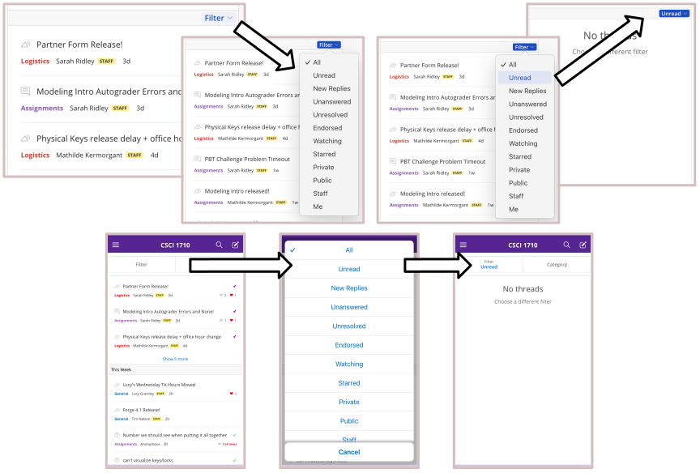
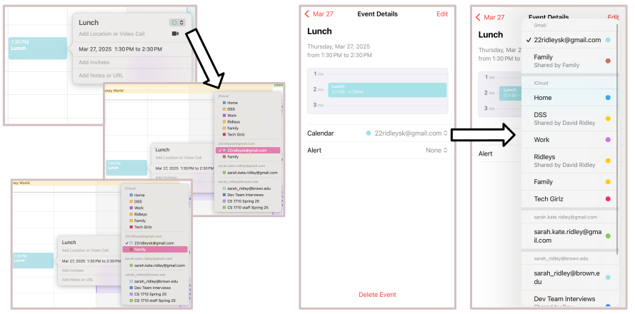
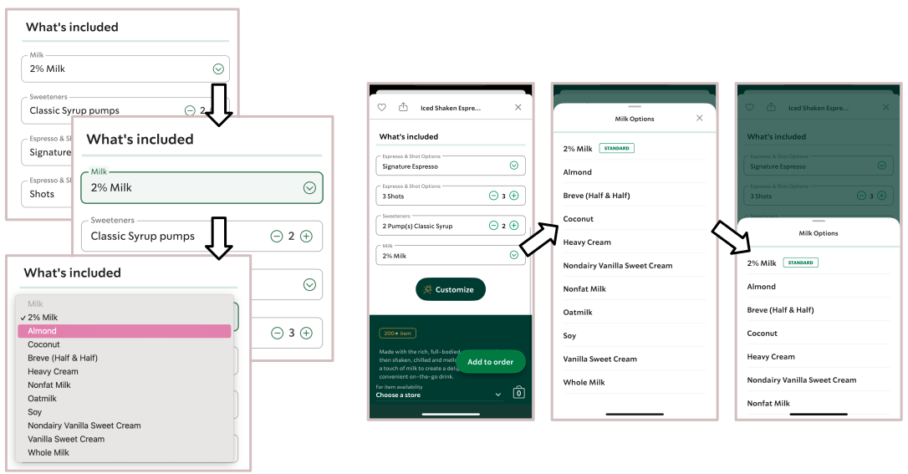

This case study describes my exploration of alternative dropdown component designs for improved accessibility.
UI/UX Designer and Front-End Developer
February - March 2024
Figma, HTML, CSS
In this case study, I examined one UI component and considered an alternative design that could increase the component's accesibility, potentially at the risk of learnability, memorability, or efficiency. The UI component I chose is the dropdown menu. I explored the accessibility of this component across devices and across modes of interacting with the device.
I began by examining three applications with dropdown menus, including the EdStem website, the Appple Calendar web/mobile app, and the Starbucks website/mobile app. For context, EdStem is a message board platform that facilitates student, TA, and professor interactions in use at Brown University. I first explored how different modes of input, including the mouse/touchpad, keyboard, and touch (on mobile) enabled different interactions with a dropdown menus in these three applications.
EdStem Web App
Mouse/Touchpad
Keyboard
Touch/Mobile
Calendar Mac App/Mobile App
Mouse/Touchpad
Keyboard
Touch/Mobile
Starbucks Web App/Mobile App
Mouse/Touchpad
Keyboard
Touch/Mobile
After exploring inputs, I also explored outputs from the dropdown menus on these three applications. The inputs can change the state of a dropdown component, and the output reflects these state changes to the user. I explored outputs including colors, text label, focus order, and screen reader output.
| EdStem Web App | Calendar Mac App/Mobile App | Starbucks Web App/Mobile App | |
|---|---|---|---|
| Colors | The "Filter" dropdown button turns blue on hover, which signals that this "Filter" text is clickable. Once the dropdown menu is open, when hovering over an option, it turns blue, signalling that it can be selected. | Each calendar is assigned a color, and the button's color changes to the color of the calendar selected. This color output increases efficiency, because users learn what color calendar they are looking for without needing to read the text in the dropdown menu. | Hovering over the "Milk" dropdown button on the Starbucks website on Mac, its color does not change. I don't find this color output useful, since when you click the button, the dropdown menu also appears, so you already know you've clicked the button. |
| Text Label | The button to open this dropdown menu is initially labeled with the text "Filter" and a downward arrow. However, after the user selects a filter from the dropdown, the text label changes from "Filter" to the name of the filter applied, such as "Unread", as in my screenshots. | On Mac, there is no text label on the calendar dropdown button, only the color of the calendar and the up and down arrows. On mobile, the button does have text, and it is the calendar currently selected for the event. This text output verifies to users that they selected the correct calendar. | The dropdown button is labeled above it with “Milk”, to signal that this dropdown selects a milk option, and the name of the current milk. The default is 2% milk, but if the user selects a different milk, the text label updates. Instead of a default, it should start as “Not Selected”, and the user shouldn't be able to buy the drink without selecting a milk. |
| Focus Order | Using the tab key, I can focus on the "Filter" dropdown button, and then use the return key to open the menu. Then, I have to use the up and down keys to switch between options, and the tab key does nothing. In addition to the up and down keys, I think the tab key should also work to switch between these options. | When I use the tab key inside this window, the dropdown menu is never focused on. This sends confusing outputs/signals back to the user. If they cannot focus on the dropdown menu, the application is signalling that it is disabled or not clickable, even though it is (and holds important functionality). | In the input section above, I found that I could focus on Starbucks' dropdown using the tab key, but could not use the keyboard to open the dropdown menu. Since the return key does nothing, the user might be confused and think that they have focused on the wrong component in their effort to customize their milk selection. |
| Screen Reader | On my Mac, I turned on VoiceOver and focused on the "Filter" dropdown button. VoiceOver reads out "Filter, menu pop up collapsed, button". When I opened the dropdown menu, VoiceOver read out "menu, ..." followed by each of the dropdown options. | When I turned VoiceOver on, I was able to use the tab key to focus on the calendar dropdown button. I turned VoiceOver off again and confirmed that I couldn't without it. This impedes acccessibility, because not all impaired users use VoiceOver, or a screen reader at all. | VoiceOver instructed me to press Control + Option + Space to open the dropdown. I tried this keystroke again with VoiceOver off, which did not work. Like Apple Calendar, Starbucks has created an accessibility problem by mismatching the needs of those that do not use VoiceOver. |
After exploring input and output from dropdowns on EdStem, Apple Calendar, and Starbucks, I had several ideas about how to improve the dropdown components found in all three applications. However, this case study will focus on my redesign of the calendar dropdown menu in Apple Calendar.
Before beginning my redesign, I created state models to display the current interactions with Apple Calendar's calendar dropdown menu. State models show both the available states of the component, as well as the actions that transition between states. Below, the two state models display pre-revision interactions with the touchpad and the keyboard respectively. Note that I often refer to pink highlights or borders, which is a Mac system setting that users customize, so these components are not pink for all users.
Initial Calendar Dropdown Menu Component: Mouse User
Given that this is the state model for mouse interactions, the user's mouse position and clicks cause all transitions between states. Another important note is that "Open" means that the dropdown menu has appeared. As shown in the state model, the dropdown menu stays visible even when the mouse leaves the area, but disappears if the mouse clicks outside of the dropdown menu area.
Initial Calendar Dropdown Menu Component: Keyboard User
As described in the input and output sections, without VoiceOver, I was unable to focus on the dropdown menu button with only my keyboard on Mac. So, this state model is missing a transition from inactive to focused, although it should be noted that the button can be tabbed into focus when VoiceOver is active.
Once the calendar dropdown menu button is focused, then users can press the return key, up and down arrows, and escape key to transition between states, as shown.
As noted above, there are several areas of improvement for these state models. Below, I present two new state models for my revised calendar dropdown, with mouse and with keyboard. The main design change I made includes adding a "Confirm" button to the dropdown menu. I will explore and justify this choice alongside the Figma models further below.
Revised Calendar Dropdown Menu Component: Mouse User
As mentioned, the main revision I made was introducing a "Confirm" button on the dropdown menu. Now, after a user clicks one of the dropdown options, they also need to click the "Confirm" button to actually select their chosen option and close the dropdown menu. If they do not select "Confirm" after clicking an option, and instead click away, their selection will not be submitted.
Revised Calendar Dropdown Menu Component: Keyboard User
For keyboard interaction, I added a transition from disabled to focused with the tab key, which the initial state model lacked.
As in the revised mouse model, this revised keyboard model also introduces a "Confirm" button. Once the user has focused on an option with the up and down keys, when they press return, their focused option is selected. This also automatically focuses the "Confirm" button. So, the user needs to press the return key again to activate the "Confirm" button and submit their selection.
This Figma model is my redesign of the calendar dropdown menu in Apple Calendar, which allows users to assign an event to a particular calendar. In the model above, this dropdown is opened with the button with the blue square and the up/down arrows, located in the event editing window. The model contains three frames, described below:
Initial State
Open, Option Highlighted State
Open, Option Selected State
While not shown in the Figma models, the first way that my redesign increases accessibility is by allowing users to focus on the dropdown with their keyboard but without VoiceOver. This interaction was surprisingly missing in Apple Calendar. The only way that this change decreases efficiency is by adding one more component that keyboard users need to tab through as they explore the event editing window. However, this is an insignficant loss in efficiency that significantly increases accessibility.
However, in other ways, my revised component does increase accessibility at the expense of efficiency. Adding a "Confirm" button means that frequent users have one more click or key to press before they can submit their dropdown selection. However, this increases accessibility beacuse it means that users with impaired motor control are less likely to accidentally submit their selection. This is because the extra confirmation transition allows users to accidentally select an option, but change their selection without the window closing (which is the current behavior of the component when any option is clicked).
When thinking about making components more accessible, it's useful to think in terms of mismatches, or situations where an interface creates unnecessary barriers for certain users due to a lack of inclusive thinking. In my redesign, adding keyboard navigability addresses the mismatch where users that only use the keyboard can still interact with this component. Similarly, adding the "Confirm" button addresses the mismatch where some users may accidentally press or interact with these components, and the confirmation step is more forgiving of accidental clicks.
In this sense, the lack of keyboard accessibility on the Apple Calendar and Starbucks dropdowns negatively impacts users with visual impairments, since focusing on the dropdown was impossible without VoiceOver, which not all impaired users might use. On the other hand, the ARIA text read by VoiceOver is a feature that is beneficial to those with visual impairments, and across the three applications, Starbucks' components had the most clear and descriptive ARIA text.
Generally, the mouse is most often prioritized when designing components, as many designers are fully-abled. But, this means that they may forget to consider the needs of those whose abilities are impaired. In this case study, I learned to prioritize the needs of users with abilities different from mine, while also prioritizing usability.